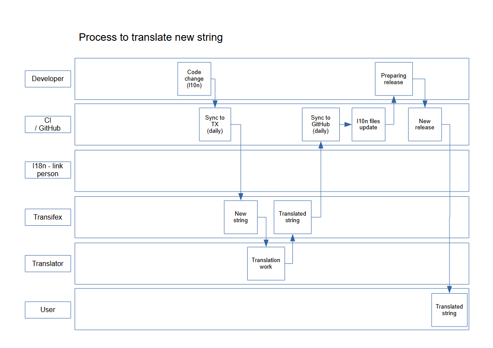
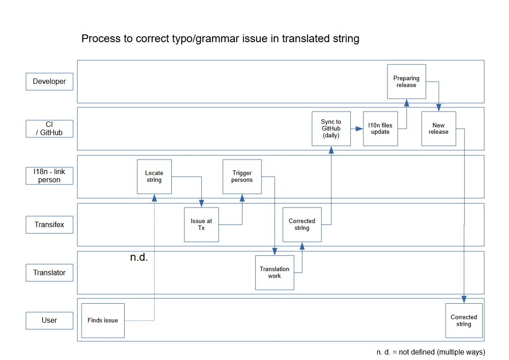
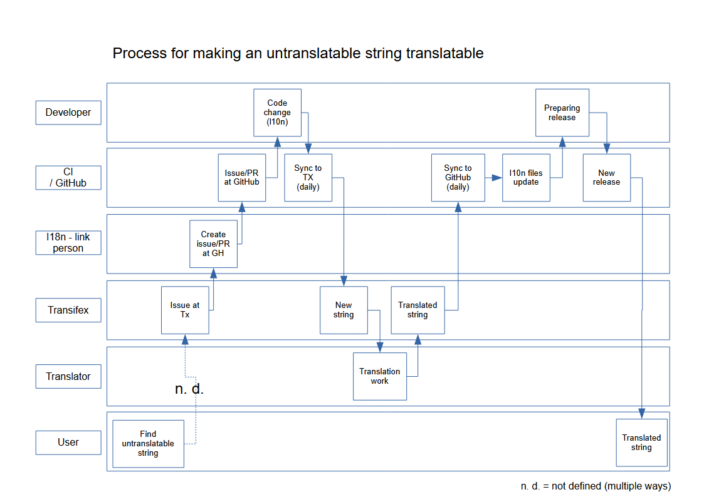
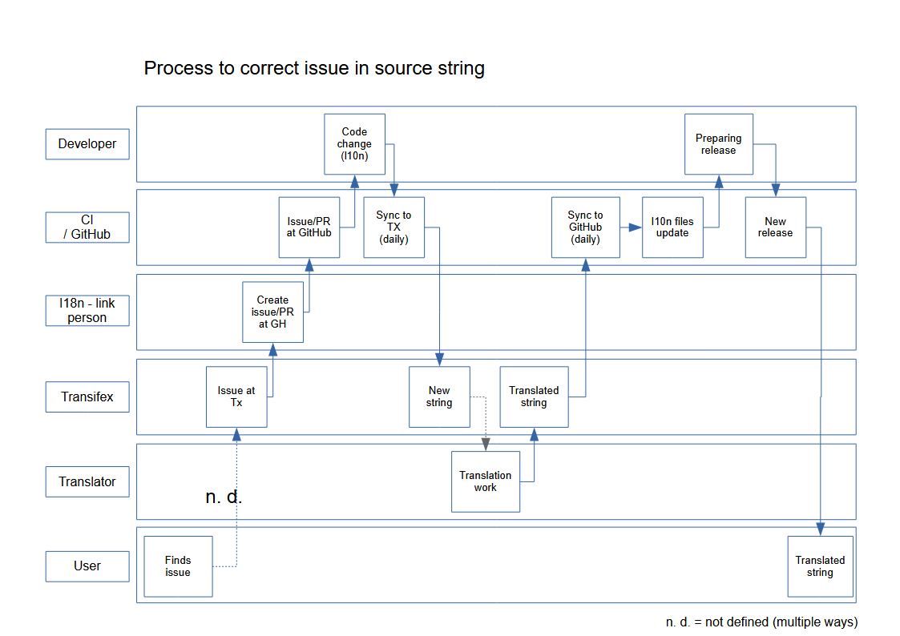

Translation
Nextcloud’s translation system is powered by Transifex. To start translating sign up and enter a group. If your community app should be translated by the Nextcloud community on Transifex just follow the setup section below.
Translation tool
Note
The tool-based translation currently only supports repositories hosted on github.com. If your app is hosted elsewhere, you can try to follow the Manual translation instead.
The translation tool scrapes the source code for method calls to t()
or n() to extract the strings that should be translated. If you check
in minified JS code for example then those method names are also quite
common and could cause wrong extractions. For this reason we allow to
specify a list of files that the translation tool will not scrape for
strings. You simply need to add a file named .l10nignore into
the root folder of your app and specify the files one per line:
# compiled vue templates
js/bruteforcesettings.js
Setup of the transifex sync
Transifex configuration .tx/config
To setup the transifex sync within the Nextcloud community you need to add first the
transifex config to your app folder at .tx/config (please replace MYAPP with your apps id):
[main]
host = https://www.transifex.com
lang_map = hu_HU: hu, nb_NO: nb, sk_SK: sk, th_TH: th, ja_JP: ja, bg_BG: bg, cs_CZ: cs, fi_FI: fi
[o:nextcloud:p:nextcloud:r:{{APPID}}]
file_filter = translationfiles/<lang>/{{APPID}}.po
source_file = translationfiles/templates/{{APPID}}.pot
source_lang = en
type = PO
Then create a folder l10n and a file l10n/.gitkeep to create an
empty folder which later holds the translations.
Branch selection .tx/backport
The bot will run every night and only push commits to the following branches branch once there is an update to the translation:
main
master
stableX (X being the recent 3 versions of Nextcloud Server)
You can overwrite this list by creating a file .tx/backport in your repository with the following content:
develop stable
That would sync the translations for the branches (main and master are added automatically):
main
master
develop
stable
Excluding files .l10nignore
Add one more file called .l10nignore in root of the repository and the files and folders to ignore for translations.
This should be used to exclude files that create false-positive translations, such as:
Compiled JavaScript files
js/3rd-party PHP dependencies
vendor/Non-shipped files and documentation
docs/
Validate source strings
After finishing the setup, you can validate the translation source strings which outlines some common mistakes. Clone the nextcloud/docker-ci repository and afterwards run the following script:
bash translations/validateSyncSetup.sh Owner Repository
Repository permissions
Now the GitHub account @nextcloud-bot needs to get write access to your repository.
You can invite it from your repository settings:
https://github.com/<user-name>/<repo-name>/settings/access
After sending the invitation, please open a ticket using the “Request translations” template.
Attention
In general you should enable the
protected branches feature
for default and stable branches. If you do that, you need to grant the
@nextcloud-bot admin permissions and allow administrators to bypass the protection.
This feature however is only possible for repositories owned by organizations, not in repositories owned by individuals!
You can create your own organization
If you need help just open a ticket with the request and we can also guide you through the steps.
Manual translation
If Transifex is not the right choice or the app is not accepted for translation, generate the gettext strings by yourself by executing our translation tool in the app folder:
cd /srv/http/nextcloud/apps/myapp
translationtool.phar create-pot-files
The translation tool requires gettext, installable via:
apt-get install gettext
The above tool generates a template that can be used to translate all strings
of an app. This template is located in the folder translationfiles/template/ with the
name myapp.pot. It can be used by your favored translation tool such
as Poedit. It then creates a .po file.
The .po file needs to be placed in a folder named like the language code
with the app name as filename - for example translationfiles/es/myapp.po.
After this step the tool needs to be invoked to transfer the po file into our
own fileformat that is more easily readable by the server code:
translationtool.phar convert-po-files
Now the following folder structure is available:
myapp/l10n
|-- es.js
|-- es.json
myapp/translationfiles
|-- es
| |-- myapp.po
|-- templates
|-- myapp.pot
You then just need the .json and .js files for a working localized app.
Documentation on the translation process
The following describes four processes:
Process to translate new string

Process to correct typo/grammar issue in translated string

Process for making an untranslatable string translatable

Process to correct issue in source string
